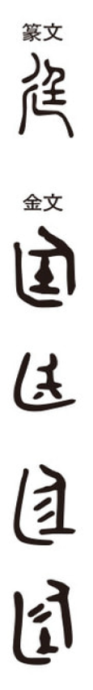

廷

Kun: niwa | On: tei
court, courtyard, government office, imperial court
Explanation
The character 廷 combines 廴, which signifies extended movement or the outward stretch of space beyond a structure, with 玉 as the phonetic. In early bronze inscriptions it appears in the expression 中廷, referring to the central courtyard that lay before the hall, where important rituals such as investitures and bestowals were performed. 廴 conveys the notion of an external extension, the uncovered forecourt rather than the roofed interior. Related forms such as 延, showing a figure standing before the earth deity, preserve the sense of upright presence and ritual setting. Thus 廷 originally denoted the open forecourt in front of the hall, the locus of state ceremony and authority.